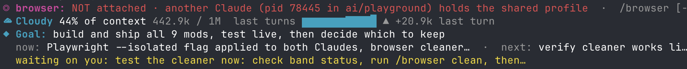

browser-lanes
Shows if this session has a Playwright browser and who holds it. A subagent that wants the browser waits until the one using it is done.

Install
claude plugin marketplace add hamzafer/claude-code-mods
claude plugin install browser-lanes@claude-code-modsRestart Claude Code after installing. To try it without installing, clone the repo and run claude --plugin-dir mods/browser-lanes.
How to use
/browser- Shows the browser status
/browser clean- Lists the browsers other sessions left open and closes the ones you pick
How it behaves
- Without --isolated, every session shares one Chrome profile and the second one gets "Browser is already in use".
- It closes Chrome only, never a Claude session.
- When a browser call fails with "already in use", it offers to close the blocking browser and retries.
- Subagents in one session take turns. A second one's browser call waits until the first is done (closed it, finished, or idle 90 s), for up to 5 minutes.
- Screenshots get the name of the agent that took them, like login-test-03.png.